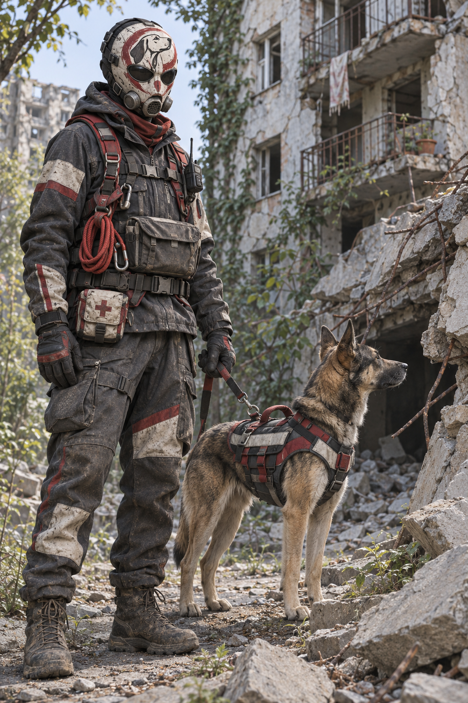

Em meio a ruídos e caminhos bloqueados, Mastim começou a perceber que um cão treinado podia indicar presença e passagem antes de uma equipe entrar num local.
PROPOSTA DE LORE // EM REVISÃO
MASTIM.
Mastim trabalha com cães de busca e resgate. A máscara integral leva um emblema canino e protege o rosto em ambientes de poeira, enquanto a parceria com os animais é construída com treino e cuidado.
ABRIR ARQUIVO FOTOGRÁFICO →
Este dossiê apresenta uma proposta revisável com base no conceito visual e na função do personagem. Idade, nome civil, datas e vínculos pessoais ficam em aberto quando ainda não foram definidos.
O que a extinção
deixou nele.
Os registros abaixo organizam sua função e sua trajetória em linhas gerais. As cenas específicas continuam abertas à revisão.
Aprendeu a cuidar dos animais, reconhecer sinais de cansaço e manter pausas durante as buscas. O trabalho depende de confiança; nenhum cão é tratado como equipamento descartável.
Aos 35 anos no presente, participa de buscas e resgates com seu parceiro canino. A máscara com emblema representa essa parceria, não uma imagem de ameaça.
Busca e resgate com cães
- Busca e orientação com cães
- Leitura de sinais e comportamento animal
- Planejamento de pausas e segurança
Máscara integral com emblema canino; parceiro de busca ainda sem nome definido.
O que carrega
por dentro.
Calmo, protetor e muito atento ao bem-estar dos animais. Mastim confia no treinamento, mas não ignora quando o cão indica que precisa parar.
“Eles encontram sinais que a gente não percebe.”